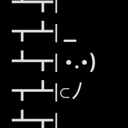

    <div class="container-fluid bg-white mt-5">
        <div class="container pb-5">
            <div class="row g-5">
                <div class="col-xxl-4 col-xl-4 col-lg-4 col-md-6 col-sm-12 col-xs-12">
                    
                    <h3 class="text-uppercase">Mu</h3>
                    <p>Owner of the contract, Mu also manages the upgrade of the Mars Colony plots and any future digital assets owned by OM. He also is responsible for Onemoon burn reports whenever they become available. Extremely well known in the MochiSwap community, Mu consistently reveals himself from the shadows to help OneMoon when required. He is reliable, open minded and always listens to what the community wants.</p>
                </div>
                <div class="col-xxl-4 col-xl-4 col-lg-4 col-md-6 col-sm-12 col-xs-12">
                    
                    <h3 class="text-uppercase">Thulsa Doom</h3>
                    <p>A web designer by trade, Thulsa has been an invaluable asset to the team and has volunteered his skills in producing a brand new website for OM. Furthermore, he is responsible for any graphic designs used for Onemoon campaigns and promotions. He is extremely humble, yet delivers high impact results. More likely than not, you've seen him helping people in the Telegram channel. His sense of responsibility and witty humour makes him a pleasure to collaborate with.</p>
                </div>
                <div class="col-xxl-4 col-xl-4 col-lg-4 col-md-6 col-sm-12 col-xs-12">
                    
                    <h3 class="text-uppercase">Ken</h3>
                    <p>Ken is optimistic and full of surprises because he drafts amazing reports in the shortest timeframes. If you’ve read any proposals or investment reports from Onemoon, then chances are you’ve seen Ken’s work. The proposals and reports are always professional, clear and concise. A business analyst by trade; a fantastic asset to the DAO by generating simple and effective reports on past performance as well as future forecasts. He also has some software development (.NET) and is completing another course in blockchain development.</p>
                </div>
                <div class="col-xxl-4 col-xl-4 col-lg-4 col-md-6 col-sm-12 col-xs-12">
                    
                    <h3 class="text-uppercase">Frisky Gecko</h3>
                    <p>FriskyGecko- (focus area: Community platforms and engagement)
                    Old man Frisks (he’s not actually an old man) is a professional game developer. Although OM is not ready to take advantage of his skills right now, it's definitely beneficial to have him on the team. He's never missed a meeting and continuously delivers great ideas to Onemoon. Besides being the Reddit moderator, Frisks also relays important updates and official statements directly to the community, and has also led the Ukraine Unchained donation campaign. He is empathetic and kind, and really cares about the people around him.</p>
                </div>
                <div class="col-xxl-4 col-xl-4 col-lg-4 col-md-6 col-sm-12 col-xs-12">
                    
                    <h3 class="text-uppercase">Coin Chowder</h3>
                    <p>Finally, probably the least impressive of them all. Essentially, my role is to keep the ball rolling for this project. From investor to contributor, I saw the opportunity to gather passionate community members, introducing structure to get everything organised. My contributions so far include the establishment of the DAO fund, listing on sites such as CoinGecko & CoinMarketCap, migrating our snapshot voting to the new snapshot.org. I focus on motivating the team, initiating meetings & conversations, while sparking new ideas to benefit Onemoon.</p>
                </div>
            </div>
        </div>
    </div>
